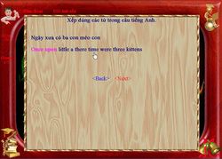
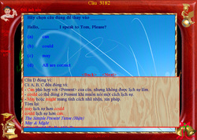

Phần mềm học tiếng Anh
Sử dụng Grammar như thế nào?

Một số người không biết phải bắt đầu học G từ mục nào, phần nào. Bởi lẽ G có quá nhiều chức năng.
G chủ trương đáp ứng tất cả mọi yêu cầu của người học tiếng Anh nên nó buộc phải có nhiều công cụ. Tuy nhiên tác giả đã tính toán cẩn thận để không làm user bị rối. Vì thế, G được thiết kế theo dạng "đa năng, đa hệ".
Để hiểu rõ điều này, bạn thử mở bất kỳ một mục nào trong G để học thử. Bạn sẽ ngạc nhiên nhận thấy rằng: không có mục nào bạn không thể học được, cho dù bạn đang ở bất cứ trình độ nào. Đó là nhờ bí quyết và sự sáng tạo độc đáo trong cấu trúc và giáo trình.
Một số người muốn học G theo một lộ trình bài bản, những người khác lại muốn học G theo ngẫu hứng, có người muốn khởi đầu bằng mục mà họ cảm thấy thích, người khác muốn học một số mục nào đó để đáp ứng nhu cầu cấp bách... Nói chung nếu không quan tâm đến trình tự, bạn có thể tự do tiếp cận, lục lọi và học bất cứ mục nào bạn cảm thấy thích. Bởi lẽ những mục đó sẽ dẫn bạn đến những mục khác của G theo nhu cầu học tập.
Tuy nhiên để user không phải bỡ ngỡ, tôi xin nêu cách học như sau:
Bước 1: Học từ mới trong bài đọc
1. Xem Từ Chọn
G chủ trương đáp ứng tất cả mọi yêu cầu của người học tiếng Anh nên nó buộc phải có nhiều công cụ. Tuy nhiên tác giả đã tính toán cẩn thận để không làm user bị rối. Vì thế, G được thiết kế theo dạng "đa năng, đa hệ".
Để hiểu rõ điều này, bạn thử mở bất kỳ một mục nào trong G để học thử. Bạn sẽ ngạc nhiên nhận thấy rằng: không có mục nào bạn không thể học được, cho dù bạn đang ở bất cứ trình độ nào. Đó là nhờ bí quyết và sự sáng tạo độc đáo trong cấu trúc và giáo trình.
Một số người muốn học G theo một lộ trình bài bản, những người khác lại muốn học G theo ngẫu hứng, có người muốn khởi đầu bằng mục mà họ cảm thấy thích, người khác muốn học một số mục nào đó để đáp ứng nhu cầu cấp bách... Nói chung nếu không quan tâm đến trình tự, bạn có thể tự do tiếp cận, lục lọi và học bất cứ mục nào bạn cảm thấy thích. Bởi lẽ những mục đó sẽ dẫn bạn đến những mục khác của G theo nhu cầu học tập.
Tuy nhiên để user không phải bỡ ngỡ, tôi xin nêu cách học như sau:
Bước 1: Học từ mới trong bài đọc
- Phần bài đọc có hơn 1500 bài đọc âm thanh máy và âm thanh thực. Bạn nên học các bài âm thanh máy trước, vì nó cho phép chỉnh tốc độ đọc.
1. Xem Từ Chọn
- Mục này sẽ thu lượm tất cả những từ bạn chọn (bằng cách tra từ và nhấn Enter) trong quá trình học mục BÀI ĐỌC, LUYỆN NÓI, PHÂN TÍCH CÂU. Những từ bạn chọn đầu tiên sẽ được xếp ở trên. Tất nhiên bạn có thể nhấp chuột tra từ. Nhấp chuột phải 1 lần để xem câu chứa từ vựng. Bạn có thể tra từ trong câu Anh bằng cách nhấp chuột trái vào từ cần tra. Bằng cách này, bạn sẽ học từ vựng theo sự gợi nhớ của từng câu trong bài đọc. Bạn có thể xóa các từ đã chọn bằng cách nhấn chuột và quét chúng để đánh dấu những từ cần xóa.
- Đây là công cụ cực kỳ hiệu quả, giúp bộ não ghi nhớ từ vựng một cách tích cực dựa vào tốc độ di chuyển của từ vựng trên màn hình.
- Mỗi ngày bạn nên dành ít nhất 2 lần để ôn luyện lại số từ đã chọn.
- Bằng cách này, bạn sẽ học từ vựng bất chấp ngoại cảnh ồn ào và với sự hưng phấn cao độ. Phần này cũng được thiết kế như Game để “không gây buồn ngủ”.
- Tuy nhiên, mục Quay từ chỉ hỗ trợ thêm việc ghi nhớ từ vựng. Không nên học từng từ vựng theo cách học cổ xưa. Cách học từ vựng tốt nhất là luyện đọc hiểu bài đọc thật nhiều lần sau khi luyện tập Quay từ.
Bước 3: Học Văn Phạm.
- Sau khi đã học khoảng 1000 từ bạn có thể chọn phần VĂN PHẠM.
- Nên học văn phạm theo thứ tự.
- Làm bài tập của mỗi mục văn phạm.
- Chọn mục Bài đọc.
- Chọn bài đọc cũ. Tập dịch từng câu trong bài.
- Nhấn chuột phải để xem câu dịch.
- Đọc và dịch nhiều lần cho đến khi thuần thục.
Bước 5: Học thêm từ vựng.
- Sau khi đã học phần văn phạm bạn cần học thêm các bài đọc còn lại trong phần BÀI ĐỌC để gia tăng mức từ vựng.
- Đây là phần giúp học viên nắm vững khả năng nghe và ý nghĩa từ vựng trong thực tế. Bạn phải tự tải một số video.
- Chọn mục Luyện Nghe.
- Chọn Luyện nghe Video.
- Nhấn chuột vào mục Hướng dẫn để biết cách sử dụng.
- Mục đích của phần này là giúp học viên nắm thật vững từng từ và vị trí của nó trong câu. Qua đó, họ có thể TỰ VIẾT chính xác một câu với sự tự tin vững chắc.
- Cách sử dụng của mục này giống mục Bài Đọc. Tuy nhiên bạn có thể nhấp chuột phải vào từng từ trong bài đọc. Một bảng biểu phân tích sẽ hiện ra, kèm theo những mục văn phạm cần thiết cho bài phân tích.

Bước 8: Luyện xếp từ.
Bước 10: Luyện nghe rồi viết lại. (Để nhớ mặt chữ).
- Đây là phần rất quan trọng. Nó sẽ giúp bạn tập lập câu trước khi nói hoặc viết.
- Chọn mục Bài đọc.
- Chọn bài đọc.
- Chọn Xếp từ.
- Bạn sẽ thấy 1 câu Anh bị đảo lộn trật tự từ.
- Bạn chỉ cần nhấp chuột phải 1 lần vào từ Anh cần di chuyển.
- Nhấn Enter để xem đáp án hoặc để chuyển sang câu mới.
- Chọn mục Bài đọc.
- Luyện đọc hiểu từng câu với tốc độ thật nhanh.
- Tốc độ đọc hiểu phải gấp hai lần tốc độ đọc trong máy.
- Nghe và nhìn bài đọc.
- Nghe và không nhìn bài đọc.
- Nghe theo bài tập.
- Nghe theo video.
Bước 10: Luyện nghe rồi viết lại. (Để nhớ mặt chữ).
- Phần này giúp bạn nâng cao khả năng nghe và tự viết lại để nhớ mặt chữ. Màn hình sẽ xuất hiện 1 khung trống để bạn vừa nghe vừa gõ lại 1 câu Anh. Phía trên là câu tiếng Việt tương ứng.

Bước 11: Làm bài khảo sát. (Để thi lấy bằng cấp).
– Sau khi đạt mức từ vựng khoảng 3000 từ, bạn có thể lần lượt làm bài tập của các mục:
Các bài tập bao gồm 5 dạng:
Đây là phần độc đáo với phương pháp luyện tập mới nhất nhằm tạo PHẢN XẠ đàm thoại. Phần này giúp học viên nói cấp tốc và cả học nói nghiêm túc theo bài bản. Nó tạo ra một giáo viên thật hướng dẫn từng câu từng từ theo từng tốc độ. Ngoài ra bạn có thể tự chọn những câu cần học theo ý muốn.
Đó là kiểu học bài bản dành cho những học viên ở cấp độ vỡ lòng hoặc cần thi lấy bằng cấp. Dựa vào lộ trình nêu trên, bạn có thể vạch ra cho mình một lộ trình riêng, phù hợp với mục đích học tiếng Anh của bạn. Chẳng hạn với người cần giao tiếp gấp thì sẽ bỏ qua mục từ vựng tranh, làm bài thi, bài đọc v.v... Lộ trình riêng cũng tùy thuộc vào độ tuổi. Chẳng hạn với em nhỏ thì chỉ nên học mục từ vựng tranh là đủ. Sinh viên ngành Y có lẽ quan tâm đến những video loại C hơn là loại A.
Mọi ý kiến xin chuyển đến trang Góp ý.
Thân chào.
– Sau khi đạt mức từ vựng khoảng 3000 từ, bạn có thể lần lượt làm bài tập của các mục:
- ARTICLES (Luyện tập về Mạo từ)
- CONDITIONAL (Luyện câu điều kiện)
- TENSE (Luyện tập về thì)
- PREPOSITION & IDIOMS (Giới từ và thành ngữ)
- PRELIMINARY TESTS A (Luyện thi bằng A)
- PRELIMINARY TESTS B (Luyện thi bằng B)
- TOEFL TESTS (Luyện thi bằng C)
- TOEFL VOCABULARY (Luyện từ vựng C)
- B VOCABULARY (Luyện từ vựng B)
Các bài tập bao gồm 5 dạng:
- Bài tập điền từ
- Bài tập điền từ có chỉ thị
- Bài tập trắc nghiệm a,b,c,d
- Bài tập tìm chỗ sai
- Bài tập xếp từ
Đây là phần độc đáo với phương pháp luyện tập mới nhất nhằm tạo PHẢN XẠ đàm thoại. Phần này giúp học viên nói cấp tốc và cả học nói nghiêm túc theo bài bản. Nó tạo ra một giáo viên thật hướng dẫn từng câu từng từ theo từng tốc độ. Ngoài ra bạn có thể tự chọn những câu cần học theo ý muốn.
Đó là kiểu học bài bản dành cho những học viên ở cấp độ vỡ lòng hoặc cần thi lấy bằng cấp. Dựa vào lộ trình nêu trên, bạn có thể vạch ra cho mình một lộ trình riêng, phù hợp với mục đích học tiếng Anh của bạn. Chẳng hạn với người cần giao tiếp gấp thì sẽ bỏ qua mục từ vựng tranh, làm bài thi, bài đọc v.v... Lộ trình riêng cũng tùy thuộc vào độ tuổi. Chẳng hạn với em nhỏ thì chỉ nên học mục từ vựng tranh là đủ. Sinh viên ngành Y có lẽ quan tâm đến những video loại C hơn là loại A.
Mọi ý kiến xin chuyển đến trang Góp ý.
Thân chào.